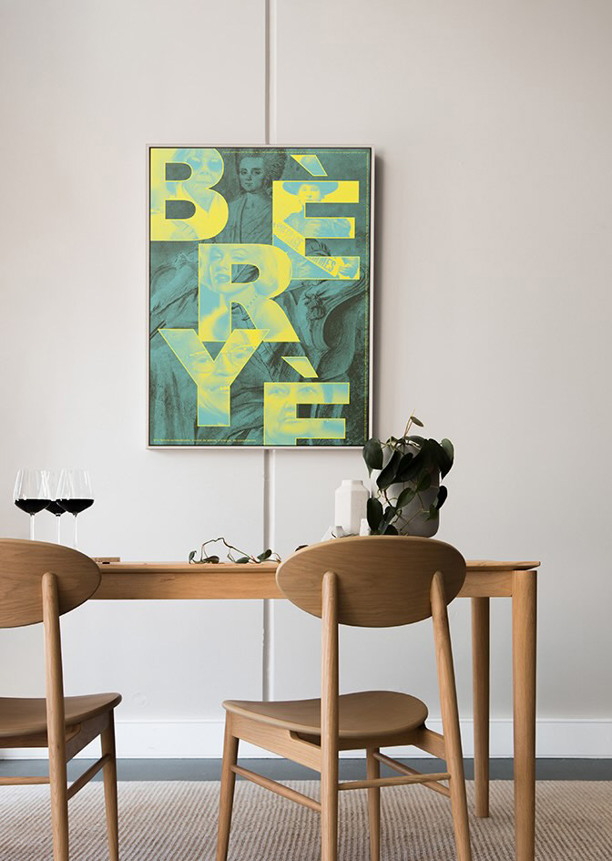
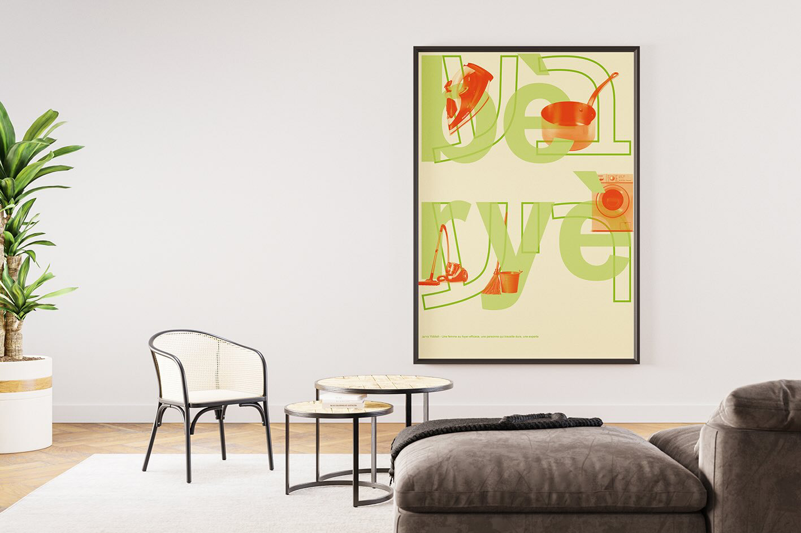
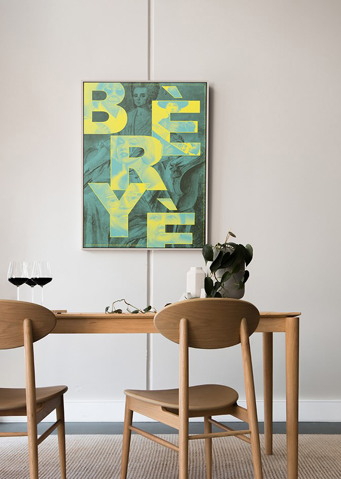
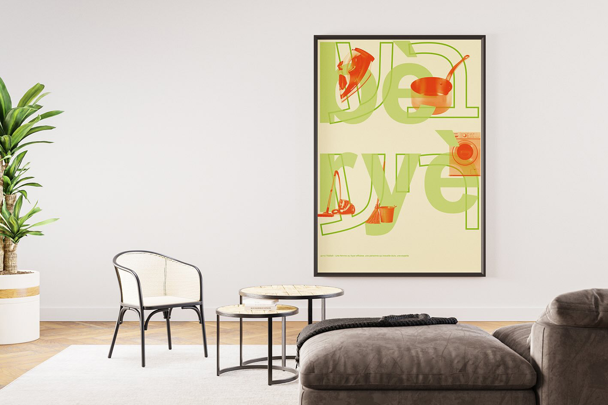

Femmes
Bèryè : en yiddish, une femme extraordinaire, bourrée de talent, d'énergie, de compétence.
Dans les livres d'histoire : Mise en valeur des femmes importantes de l'histoire.
La réelle place de la femme : clin d'oeil à l'ancien sens de ce mot, une femme au foyer. La définition a évoluée avec les mœurs de nos sociétés occidentales.
Dans les rues : mise en avant des femmes féministes qui se battent pour leurs droits.
 


